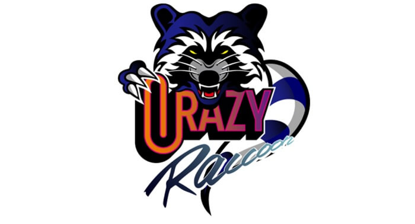
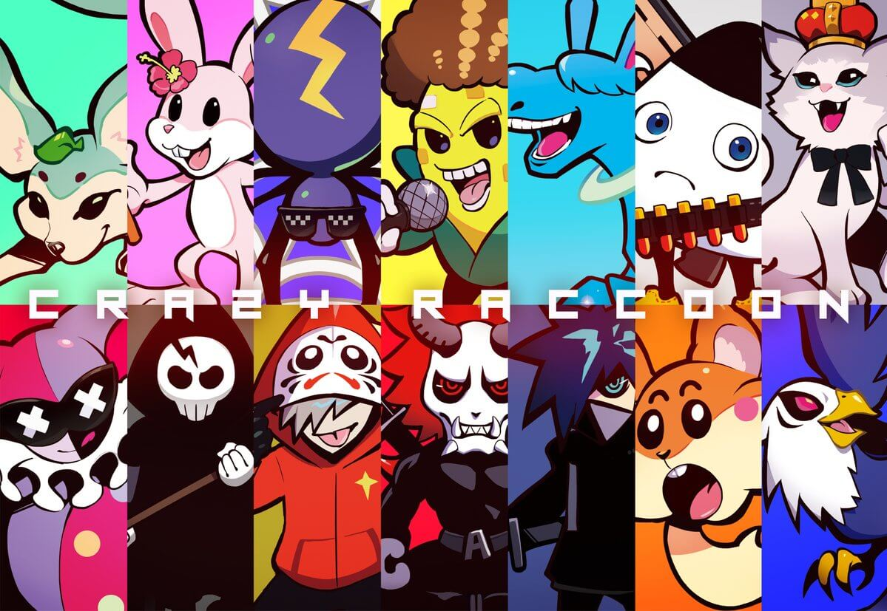

CRメンバー紹介！
Crazy Raccoonについて

- 「Fortnite部門」「Vainglory部門」「Streamers部門」からなるプロゲーミングチームとして創立
- 高額な賞金が出るCRカップという大会も開いており、毎回盛り上がっている。
- クレイジーラクーンは人気、実力ともにトップレベルのゲーミングチームだ。
メンバー紹介
まとめ

今回紹介しきれなかったメンバーも
たくさんいます
今後の活躍にも期待します！
公式サイト
ホームページ
instagram
twitter
©2022 Aono Motoharu.